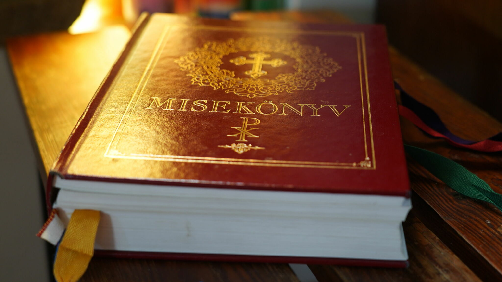

A Könyv
Definníciója:
Tudományos, irodalmi vagy bármilyen más mű, amely elegendő hosszúságú ahhoz, hogy kötetet hozzon létre, amely megjelenhet nyomtatásban vagy más adathordozón.
Nem feltétlenül kell nyomtatni, de a digitális formátum, valamint az audio formátum elfogadott.
Könyvek fajtái:
- Nagy könyv
- Antifonális
- Borjú
- Másológép
- Lovagiasságról szóló könyv
- Éjszakai könyv
- Pénztár
- Stílusból
- A családtól
- Az élettől
- Negyven lapos könyv
- A megmentettek könyve
- Misekönyv
- Zenei könyv
- Tankönyvek
- E-könyv
- Zöld könyv

Misekönyv
Könyvek típusai:
- Formátum szerint
- Az irodalmi műfaj szerint
- Rég olvasott könyvek
- Konzultációra
- Zsebkönyvek
- A megadott felhasználás szerint
Zsebkönyv
By: Merth Zsófia